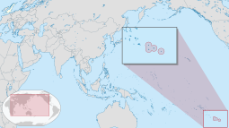

Pitcairn Islands
Pitcairn Islands Pitkern Ailen (Pitcairn-Norfolk) | |
|---|---|
| Pitcairn, Henderson, Ducie and Oeno Islands | |
| Anthem: "God Save the King" | |
| Local anthem: "Come Ye Blessed" | |
|  Map showing location of the Pitcairn Islands (circled at the lower-right and magnified in an inset) | |
| Sovereign state | |
| Settlement | 15 January 1790 |
| British colony | 30 November 1838 |
| Capital and largest settlement | Adamstown[note 1] 25°04′S 130°06′W / 25.067°S 130.100°W |
| Official languages | |
| Ethnic groups | Pitcairn Islanders |
| Demonym(s) |
|
| Government | Devolved locally governing dependency |
• Monarch | Charles III |
• Governor | Iona Thomas |
| Lindsy Thompson[2] | |
• Mayor | Simon Young |
| Legislature | Island Council |
| Government of the United Kingdom | |
• Minister | Stephen Doughty |
| Area | |
• Total | 47 km2 (18 sq mi) (not ranked) |
| Highest elevation | 330 m (1,080 ft) |
| Population | |
• 2023 estimate | 35[3] (last) |
• Density | 1/km2 (2.6/sq mi) (not ranked) |
| GDP (nominal) | 2005 estimate |
• Total | NZ$217,000[4] |
• Per capita | NZ$4,617.02 |
| Currency | New Zealand dollar (NZ$)[a] (NZD) |
| Time zone | UTC-08:00 |
| Driving side | left |
| Calling code | +64 |
| UK postcode | PCRN 1ZZ |
| ISO 3166 code | PN |
| Internet TLD | .pn |
| Website | www.government.pn |
| |

{kind=link}
{kind=link}
The Pitcairn Islands (/ˈpɪtkɛərn/ PIT-kairn;[5] Pitkern: Pitkern Ailen), officially Pitcairn, Henderson, Ducie and Oeno Islands,[6][7][8][9] are a group of four volcanic islands in the southern Pacific Ocean that form the sole British Overseas Territory in the Pacific Ocean. The four islands—Pitcairn, Henderson, Ducie and Oeno—are scattered across several hundred miles of ocean and have a combined land area of about 18 square miles (47 km2). Henderson Island accounts for 86% of the land area, but only Pitcairn Island is inhabited. The inhabited islands nearest to the Pitcairn Islands are Mangareva (of French Polynesia), 688 km to the west,[note 2] as well as Easter Island, 1,929 km to the east.
The Pitcairn Islanders are a biracial ethnic group descended mostly from nine Bounty mutineers and a handful of Tahitian consorts—as is still apparent from the surnames of many of the islanders. The mutiny and its aftermath have been the subject of many books and films. As of January 2020, the territory had only 47 permanent inhabitants.[10]
History
[edit]Polynesian settlement
[edit]The earliest known settlers of the Pitcairn Islands were Polynesians who appear to have lived on Pitcairn and Henderson for several centuries. Although archaeologists believe that Polynesians were living on Pitcairn as late as the 15th century, the islands were uninhabited when they were discovered by Europeans.[11]
European arrival
[edit]{kind=link}
{kind=link}
Portuguese sailor Pedro Fernandes de Queirós came upon Ducie and Henderson Islands while sailing for the Spanish Crown, arriving on 26 January 1606. He named them La Encarnación ("The Incarnation") and San Juan Bautista ("Saint John the Baptist"), respectively. However, some sources express doubt about exactly which of the islands were visited and named by Queirós, suggesting that La Encarnación may actually have been Henderson Island, and San Juan Bautista may have been Pitcairn Island.[12]
Pitcairn Island was sighted on 3 July 1767 by the crew of the British sloop HMS Swallow, commanded by Captain Philip Carteret. The island was named after midshipman Robert Pitcairn, a 15-year-old crew member who was the first to sight the island. Robert Pitcairn was a son of British Marine Major John Pitcairn, who was later killed at the 1775 Battle of Bunker Hill in the American War of Independence.
Carteret, who sailed without the newly invented marine chronometer, charted the island at 25°02′S 133°21′W / 25.033°S 133.350°W, and although the latitude was reasonably accurate, his recorded longitude was incorrect by about 3°, putting his coordinates 330 km (210 mi) to the west of the actual island. This made Pitcairn difficult to find, as highlighted by the failure of captain James Cook to locate the island in July 1773.[13][14]
European settlement
[edit]{kind=link}
{kind=link}
In 1790, nine of the mutineers from the British merchant ship HMS Bounty, along with the native Tahitian men and women who were with them (six men, 11 women, and a baby girl), settled on Pitcairn Island and set fire to the Bounty. The inhabitants of the island were well aware of the Bounty's location, which is still visible underwater in Bounty Bay, but the wreckage gained significant attention in 1957 when documented by National Geographic explorer Luis Marden. Although the settlers survived by farming and fishing, the initial period of settlement was marked by serious tensions among them. Alcoholism, murder, disease and other ills took the lives of most mutineers and Tahitian men. John Adams and Ned Young turned to the scriptures, using the ship's Bible as their guide for a new and peaceful society. Young eventually died of an asthmatic infection.
Ducie Island was rediscovered in 1791 by Royal Navy captain Edward Edwards aboard HMS Pandora, while searching for the Bounty mutineers. He named it after Francis Reynolds-Moreton, 3rd Baron Ducie, also a captain in the Royal Navy.
The Pitcairn islanders reported it was not until 27 December 1795 that the first ship since the Bounty was seen from the island, but it did not approach the land and they could not make out the nationality. A second ship appeared in 1801, but made no attempt to communicate with them. A third came sufficiently near to see their house, but did not try to send a boat on shore. Finally, the American sealing ship Topaz, under Mayhew Folger, became the first to visit the island, when the crew spent ten hours on Pitcairn in February 1808.[15] Whalers subsequently became regular visitors to the island. The last recorded whaler to visit was the James Arnold in 1888.[16]
{kind=link}
A report of Folger's discovery was forwarded to the Admiralty, mentioning the mutineers and giving a more precise location of the island: 25°02′S 130°00′W / 25.033°S 130.000°W.[17] However, this was not known to Sir Thomas Staines, who commanded a Royal Navy flotilla of two ships, HMS Briton and HMS Tagus, which found the island at 25°04′S 130°25′W / 25.067°S 130.417°W (by meridian observation) on 17 September 1814. Staines sent a party ashore and wrote a detailed report for the Admiralty.[18][19][20][21] By that time, only one mutineer, John Adams, remained alive. He was granted amnesty for his part in the mutiny.[18]
Henderson Island was rediscovered on 17 January 1819 by British Captain James Henderson of the British East India Company ship Hercules.[22] Captain Henry King, sailing on Elizabeth, landed on 2 March to find the king's colours already flying. His crew scratched the name of their ship into a tree. Oeno Island was discovered on 26 January 1824 by American captain George Worth aboard the whaler Oeno.
In 1832, having tried and failed to petition the British government and the London Missionary Society, Joshua Hill, an American adventurer, arrived. He reported that by March 1833, he had founded a Temperance Society to combat drunkenness, a "Maundy Thursday Society", a monthly prayer meeting, a juvenile society, a Peace Society and a school.[23]
British colony
[edit]Traditionally, Pitcairn Islanders consider that their islands officially became a British colony on 30 November 1838, at the same time becoming one of the first territories to extend voting rights to women. By the mid-1850s, the Pitcairn community was outgrowing the island; its leaders appealed to the British government for assistance, and were offered Norfolk Island. On 3 May 1856, the entire population of 193 people set sail for Norfolk on board the Morayshire, arriving on 8 June after a difficult five-week trip. However, just 18 months later, 17 of the Pitcairn Islanders returned to their home island, and another 27 followed five years later.[18]
HMS Thetis visited Pitcairn Island on 18 April 1881 and "found the people very happy and contented, and in perfect health". At that time the population was 96, an increase of six since the visit of Admiral de Horsey in September 1878. Stores had recently been delivered from friends in England, including two whale-boats and Portland cement, which was used to make the reservoir watertight. HMS Thetis gave the islanders 200 lb (91 kg) of ship's biscuits, 100 lb (45 kg) of candles, and 100 lb of soap and clothing to the value of £31, donated by the ship's company. An American trading ship called Venus had in 1882 bestowed a supply of cotton seed, to provide the islanders with a crop for future trade.[24]
{kind=link}
In 1886, the Seventh-day Adventist layman John Tay visited Pitcairn and persuaded most of the islanders to accept his faith. He returned in 1890 on the missionary schooner Pitcairn with an ordained minister to perform baptisms. Since then, the majority of Pitcairn Islanders have been Adventists.[25]
The islands of Henderson, Oeno and Ducie were annexed by Britain in 1902: Henderson on 1 July, Oeno on 10 July, and Ducie on 19 December.[12] In 1938, the three islands, along with Pitcairn, were incorporated into a single administrative unit called the "Pitcairn Group of Islands". The population peaked at 233 in 1937.[26] It has since decreased owing to emigration, primarily to Australia and New Zealand.[27]
Sexual abuse in modern times
[edit]Three cases of imprisonment for sex with underage girls were reported in the 1950s.[28]
In 1999, Gail Cox, a police officer from Kent, UK, served on a temporary assignment on Pitcairn, and began uncovering allegations of sexual abuse. When a 15-year-old girl decided to press rape charges in 1999, criminal proceedings (code-named "Operation Unique") were set in motion. The charges include 21 counts of rape, 41 of indecent assault, and two of gross indecency with a child under 14. Over the following two years, police officers in Australia, New Zealand and the United Kingdom interviewed every woman who had lived on Pitcairn in the past 20 years, as well as all of the accused men. These interviews revealed stories of girls as young as three being sexually assaulted and as young as 10 being gang-raped.[29]
The file was held by Pitcairn's first Public Prosecutor Simon Moore, an Auckland Crown Solicitor appointed to the position by the British government for the purposes of the investigation.[30][29]
Australian Seventh-day Adventist pastor Neville Tosen, who spent two years on Pitcairn around the turn of the millennium, said that on his arrival, he had been taken aback by the conduct of the children, but he had not immediately realised what was happening. "I noticed worrying signs such as inexplicable mood swings," he said. "It took me three months to realise they were being abused." Tosen tried to bring the matter before the Island Council (the legislative body which doubles as the island's court), but was rebuffed. One councillor told him, "Look, the age of consent has always been 12 and it doesn't hurt them."[31]
A study of island records confirmed anecdotal evidence that most girls bore their first child between the ages of 12 and 15. "I think the girls were conditioned to accept that it was a man's world and once they turned 12, they were eligible," Tosen said. Mothers and grandmothers were resigned to the situation, telling him that their own childhood experience had been the same; they regarded it as just a part of life on Pitcairn. One grandmother wondered what all the fuss was about. Tosen was convinced, however, that the early sexual experience was very damaging to the girls, outright stating, "They can't settle or form solid relationships. They did suffer, no doubt about it."[31][32]
In 2016, Mike Warren, Pitcairn mayor from 2008 to 2013, was convicted and sentenced to 20 months imprisonment for possession of child pornography.[33][34]
Sexual assault trials of 2004
[edit]In 2004, charges were laid against seven men living on Pitcairn and six living abroad. This accounted for nearly a third of the male population, and half of the island's adult males. After extensive trials, most of the men were convicted, some with multiple counts of sexual encounters with children.[35] On 25 October 2004, six men were convicted, including Steve Christian, the island's mayor at the time.[36][37][38] In 2004, the islanders had about 20 firearms among them, which they surrendered ahead of the sexual assault trials.[39] After the six men lost their final appeal, the British government set up a prison on the island at Bob's Valley.[40][41] The men began serving their sentences in late 2006. By 2010, all had served their sentences or been granted home detention status.[42]
Geography
[edit]The Pitcairn Islands form the southeasternmost extension of the geological archipelago of the Tuamotus of French Polynesia, and consist of four islands: Pitcairn Island, Oeno Island (atoll with five islets, one of which is Sandy Island), Henderson Island and Ducie Island (atoll with four islets).
The Pitcairn Islands were formed by a centre of upwelling magma called the Pitcairn hotspot. Pitcairn Island is a volcanic remnant primarily formed of tuff, where the north side of the cone has been eroded.[43] Pitcairn is the only permanently inhabited island. Adamstown, the main settlement on the island, lies within the volcanic basin.[43] Pitcairn is accessible only by boat through Bounty Bay, due to the island's steep cliffs.[43] Henderson Island, covering about 86% of the territory's total land area and supporting a rich variety of animals in its nearly inaccessible interior, is also capable of supporting a small human population despite its scarce fresh water, but access is difficult, owing to its outer shores being steep limestone cliffs covered by sharp coral. In 1988, this island was designated as a UNESCO World Heritage site.[44] The other islands are at a distance of more than 100 km (62 mi) and are not habitable.
Pitcairn Island has no permanent water source; however, the island has three seasonal semi-permanent springs.[43]
| Island or atoll | Type | Land area (km2) |
Total area (km2) |
Pop. 2020 |
Coordinates |
|---|---|---|---|---|---|
| Ducie Island | Atoll† | 0.7 | 3.9 | 0 | 24°40′28″S 124°47′10″W / 24.67444°S 124.78611°W |
| Henderson Island | Uplifted coral island | 37.3 | 37.3 | 0 | 24°22′01″S 128°18′57″W / 24.36694°S 128.31583°W |
| Oeno Island | Atoll† | 0.65 | 16.65 | 0 | 23°55′40″S 130°44′30″W / 23.92778°S 130.74167°W |
| Pitcairn Island | Volcanic island | 4.6 | 4.6 | 50 | 25°04′00″S 130°06′00″W / 25.06667°S 130.10000°W |
| Pitcairn Islands (all islands) |
– | 43.25 | 62.45 | 50 | 23°55′40″ to 25°04′00″S, 124°47′10″ to 130°44′30″W |
† Includes reef flat and lagoon of the atolls.
-
View from the east side of Pitcairn Island
-
Satellite photo of Pitcairn Island
-
Map of the Pitcairn Islands
-
View of Bounty Bay
{kind=link}
{kind=link}
{kind=link}
{kind=link}
Climate
[edit]{kind=link}
Pitcairn is located just south of the Tropic of Capricorn and experiences year-round warm weather.
| Climate data for Pitcairn Island (1972-2004) | |||||||||||||
|---|---|---|---|---|---|---|---|---|---|---|---|---|---|
| Month | Jan | Feb | Mar | Apr | May | Jun | Jul | Aug | Sep | Oct | Nov | Dec | Year |
| Record high °C (°F) | 31.2 (88.2) |
32.4 (90.3) |
33.3 (91.9) |
30.7 (87.3) |
29.1 (84.4) |
31.3 (88.3) |
26.7 (80.1) |
26.7 (80.1) |
25.5 (77.9) |
27.8 (82.0) |
27.6 (81.7) |
29.3 (84.7) |
33.3 (91.9) |
| Mean daily maximum °C (°F) | 25.7 (78.3) |
26.2 (79.2) |
26.1 (79.0) |
24.6 (76.3) |
22.9 (73.2) |
21.7 (71.1) |
20.8 (69.4) |
20.6 (69.1) |
21.0 (69.8) |
21.8 (71.2) |
22.9 (73.2) |
24.2 (75.6) |
23.2 (73.8) |
| Daily mean °C (°F) | 23.3 (73.9) |
23.8 (74.8) |
23.8 (74.8) |
22.5 (72.5) |
20.9 (69.6) |
19.7 (67.5) |
18.8 (65.8) |
18.5 (65.3) |
18.8 (65.8) |
19.6 (67.3) |
20.7 (69.3) |
22.0 (71.6) |
21.0 (69.9) |
| Mean daily minimum °C (°F) | 21.0 (69.8) |
21.4 (70.5) |
21.5 (70.7) |
20.3 (68.5) |
18.9 (66.0) |
17.8 (64.0) |
16.9 (62.4) |
16.5 (61.7) |
16.6 (61.9) |
17.4 (63.3) |
18.6 (65.5) |
19.8 (67.6) |
18.9 (66.0) |
| Record low °C (°F) | 16.9 (62.4) |
18.0 (64.4) |
12.8 (55.0) |
15.0 (59.0) |
14.2 (57.6) |
11.7 (53.1) |
11.4 (52.5) |
11.6 (52.9) |
10.0 (50.0) |
10.2 (50.4) |
13.0 (55.4) |
13.5 (56.3) |
10.0 (50.0) |
| Average precipitation mm (inches) | 96.5 (3.80) |
132.7 (5.22) |
107.8 (4.24) |
114.8 (4.52) |
111.9 (4.41) |
152.8 (6.02) |
139.0 (5.47) |
131.6 (5.18) |
134.5 (5.30) |
143.0 (5.63) |
120.4 (4.74) |
157.7 (6.21) |
1,542.7 (60.74) |
| Source 1: NOAA[45] | |||||||||||||
| Source 2: KNMI (precipitation)[46] | |||||||||||||
Flora
[edit]About nine plant species are thought to occur only on Pitcairn. These include tapau, formerly an important timber resource, and the giant nehe fern. Some, such as red berry (Coprosma rapensis var. Benefica), are perilously close to extinction.[47] The plant species Glochidion pitcairnense is endemic to Pitcairn and Henderson Islands.[48] Pitcairn is part of the Tuamotu tropical moist forests terrestrial ecoregion.[49]
Fauna
[edit]Between 1937 and 1951, Irving Johnson, skipper of the 29-metre (96 ft) brigantine Yankee Five, introduced five Galápagos giant tortoises to Pitcairn. Turpen, also known as Mr Turpen, or Mr. T, is the sole survivor. Turpen usually lives at Tedside by Western Harbour. A protection order makes it an offence should anyone kill, injure, capture, maim, or cause harm or distress to the tortoise.[50]
The birds of Pitcairn fall into several groups. These include seabirds, wading birds and a small number of resident land-bird species. Of 20 breeding species, Henderson Island has 16, including the unique flightless Henderson crake; Oeno hosts 12; Ducie 13 and Pitcairn six species. Birds breeding on Pitcairn include the fairy tern, common noddy and red-tailed tropicbird. The Pitcairn reed warbler, known by Pitcairners as a "sparrow", is endemic to Pitcairn Island; formerly common, it was added to the endangered species list in 2008.[51]
A small population of humpback whales migrate to the islands annually, to over-winter and breed.[52]
Important bird areas
[edit]The four islands in the Pitcairn group have been identified by BirdLife International as separate Important Bird Areas (IBAs). Pitcairn Island is recognised because it is the only nesting site of the Pitcairn reed warbler. Henderson Island is important for its endemic land-birds as well as its breeding seabirds. Oeno's ornithological significance derives principally from its Murphy's petrel colony. Ducie is important for its colonies of Murphy's, herald and Kermadec petrels, and Christmas shearwaters.[53]
Pitcairn Islands Marine Reserve
[edit]In March 2015 the British government established one of the largest marine protected areas in the world around the Pitcairn Islands. The reserve covers the islands' entire exclusive economic zone—834,334 square kilometres (322,138 sq mi). The intention is to protect some of the world's most pristine ocean habitat from illegal fishing activities. A satellite "watchroom" dubbed Project Eyes on the Seas has been established by the Satellite Applications Catapult and the Pew Charitable Trusts at the Harwell Science and Innovation Campus in Harwell, Oxfordshire to monitor vessel activity and to gather the information needed to prosecute unauthorised trawling.[54][55][56][57]
Pitcairn Islands Dark Sky Sanctuary
[edit]In March 2019 the International Dark-Sky Association approved the Pitcairn Islands as a Dark Sky Sanctuary. The sanctuary encompasses all 4 islands in the Pitcairn Islands Group for a total land area of 43.25 km2 (163⁄4 sq. mi.).[58]
Politics
[edit]{kind=link}
The Pitcairn Islands are a British overseas territory with a degree of local government. The King of the United Kingdom is represented by a Governor, who also holds office as British High Commissioner to New Zealand and is based in Wellington.[59]
The 2010 constitution gives authority for the islands to operate as a representative democracy, with the United Kingdom retaining responsibility for matters such as defence and foreign affairs. The Governor and the Island Council may enact laws for the "peace, order and good government" of Pitcairn. The Island Council customarily appoints a Mayor of Pitcairn as a day-to-day head of the local administration.
Since 2015, same-sex marriage has been legal on Pitcairn Island, although there are no people on the island known to be in such a relationship.[60]
The Pitcairn Islands have the smallest population of any democracy in the world.
The United Nations Committee on Decolonization includes the Pitcairn Islands on the United Nations list of non-self-governing territories.[61]
Military
[edit]The Pitcairn Islands are a British Overseas Territory; defence is the responsibility of the Ministry of Defence and the British Armed Forces.[27] The Royal Navy maintains two offshore patrol vessels in the Indo-Pacific region, HMS Tamar and HMS Spey. Either may be periodically employed for sovereignty protection and other duties around Pitcairn and her associated islands.[62][63][64]
Economy
[edit]Agriculture
[edit]The fertile soil of the Pitcairn valleys, such as Isaac's Valley on the gentle slopes southeast of Adamstown, produces a wide variety of fruits, including bananas (Pitkern: plun), papaya (paw paws), pineapples, mangoes, watermelons, cantaloupes, passionfruit, breadfruit, coconuts, avocadoes, and citrus (including mandarin oranges, grapefruit, lemons and limes). Vegetables include sweet potatoes (kumura), carrots, sweet corn, tomatoes, taro, yams, peas, and beans. Arrowroot (Maranta arundinacea) and sugarcane are grown and harvested to produce arrowroot flour and molasses, respectively. Pitcairn Island is remarkably productive and its benign climate supports a wide range of tropical and temperate crops.[65] All land allocation for any use including agriculture is under the discretion of the government. If the government deems agricultural production excessive then it may tax the land. If the agricultural land has been deemed not up to the standards of the government it may confiscate and transfer the land without compensation.[66]
Fish are plentiful in the seas around Pitcairn. Spiny lobster and a large variety of fish are caught for meals and for trading aboard passing ships. Almost every day someone will go fishing, whether it is from the rocks, from a longboat, or diving with a spear gun. There are numerous types of fish around the island. Fish such as nanwee, white fish, moi, and opapa are caught in shallow water, while snapper, big eye, and cod are caught in deep water, and yellow tail and wahoo are caught by trawling.
Minerals
[edit]Manganese, iron, copper, gold, silver and zinc have been discovered within the exclusive economic zone, which extends 370 km (230 mi) offshore and comprises 880,000 km2 (340,000 sq mi).[67]
Honey production
[edit]In 1998, the UK's overseas aid agency, the Department for International Development, funded an apiculture programme for Pitcairn which included training for Pitcairn's beekeepers and a detailed analysis of Pitcairn's bees and honey with particular regard to the presence or absence of disease. Pitcairn has one of the best examples of disease-free bee populations anywhere in the world and the honey produced was and remains exceptionally high in quality. Pitcairn bees are also a placid variety and, within a short time, beekeepers are able to work with them wearing minimal protection.[68] As a result, Pitcairn exports honey to New Zealand and to the United Kingdom. In London, Fortnum & Mason sells it and it is reportedly a favourite of King Charles and formerly Queen Elizabeth.[69] The Pitcairn Islanders, under the "Bounty Products" and "Delectable Bounty" brands, also export dried fruit including bananas, papayas, pineapples, and mangoes to New Zealand.[70] Honey production and all honey-related products are a protected monopoly.[71] All funds and management are under the supervision and discretion of the government.[72][73]
Cuisine
[edit]Cuisine is not very developed because of Pitcairn's small population. The most traditional meal is pota, mash from palm leaves and coconut.[74] Domestic tropical plants are abundantly used. These include basil, breadfruit, sugar cane, coconut, bananas and beans. Meat courses consist mainly of fish and beef. Given that most of the population's ancestry is from the UK, the cuisine is influenced by British cuisine; for example, the meat pie.[75]
The cuisine of Norfolk Island is very similar to that of the Pitcairn Islands, as Norfolk Islanders trace their origins to Pitcairn. The local cuisine is a blend of British cuisine and Tahitian cuisine.[76][77]
Recipes from Norfolk Island of Pitcairn origin include mudda (green banana dumplings) and kumara pilhi.[78][79] The island's cuisine also includes foods not found on Pitcairn, such as chopped salads and fruit pies.[80]
Tourism
[edit]Tourism plays a major role on Pitcairn. Tourism is the focus for building the economy. It focuses on small groups coming by charter vessel and staying at "home stays". About ten times a year, passengers from expedition-type cruise ships come ashore for a day, weather permitting.[81][82] As of 2019, the government has been operating the MV Silver Supporter as the island's only dedicated passenger/cargo vessel, providing adventure tourism holidays to Pitcairn every week. Tourists stay with local families and experience the island's culture while contributing to the local economy. Providing accommodation is a growing source of revenue, and some families have invested in private self-contained units adjacent to their homes for tourists to rent.
Entry requirements for short stays, up to 14 days, which do not require a visa, and for longer stays, that do require prior clearance, are explained in official documents.[83][84] All persons under 16 years of age require prior clearance before landing, irrespective of the length of stay.[85]
Crafts and external sales
[edit]{kind=link}
The government holds a monopoly over "any article of whatsoever nature made, manufactured, prepared for sale or produced by any of the inhabitants of Pitcairn Island".[72] The flow of funds from these revenue sources are from customer to the government to the Pitcairners.[73] The Pitcairners are involved in creating crafts and curios (made out of wood from Henderson). Typical woodcarvings include sharks, fish, whales, dolphins, turtles, vases, birds, walking sticks, book boxes, and models of the Bounty. Miro (Thespesia populnea), a dark and durable wood, is preferred for carving. Islanders also produce tapa cloth and painted Hattie leaves.[86]
The major sources of revenue have been the sale of coins and postage stamps to collectors, .pn domain names, and the sale of handicrafts to passing ships, most of which are on the United Kingdom to New Zealand route via the Panama Canal.[87] The Pitcairn Islands issued their first stamp in 1940. These became very popular with stamp collectors, and their sale became the dominant source of revenue for the community. Profits went into a general fund which enabled the island to be mostly self-sufficient. This fund was used to meet the regular needs of the community, and pay wages. Funds in excess of regular expenses were used to build a school and hire a teacher from New Zealand, the first professional teacher hired on the island. The fund was also used to subsidise imports and travel to New Zealand. At later points, the sale of coins and .pn domain names also contributed to the fund. Towards the end of the 20th century, as writing letters became less common and stamp collecting became less popular, revenue for the fund declined.[88] In 2004, the island went bankrupt, with the British government subsequently providing 90% of its annual budget.[89]
Electricity
[edit]Diesel generators provide the island with electricity 24/7. A wind power plant was planned to be installed to help reduce the high cost of power generation associated with the import of diesel, but was cancelled in 2013 after a project overrun of three years and a cost of £250,000.[90]
All homes have solar systems generating over 95% of that required for home use.
The only qualified high-voltage electrician on Pitcairn, who manages the electricity grid, reached the age of 67 in 2020.[91]
Demographics
[edit]The islands have suffered a substantial population decline since 1940, and the island's community recognise that for the long-term sustainability repopulation is the number one strategic development objective (see #Population decline, below). The government is committed to attracting migrants.[92]
Only two children were born on Pitcairn in the 21 years prior to 2012. However in this period other children were born to Pitcairn mothers who travelled to New Zealand to receive increased health care safeguards during pregnancy and childbirth.[93] In 2005, Shirley and Simon Young became the first married outsider couple in history to obtain citizenship on Pitcairn.[94]
Language
[edit]Over 60% of Pitcairn Islanders are descendants of the Bounty mutineers and Tahitians (or other Polynesians). Pitkern is a creole language derived from 18th-century English, with elements of the Tahitian language.[27][44] It is spoken as a first language by the population and is taught alongside English at the island's only school. It is closely related to the creole language Norfuk, spoken on Norfolk Island, because Norfolk was repopulated in the mid-19th century by Pitcairners.
Religion
[edit]The only church building on the island is Seventh-day Adventist.[27] The Seventh-day Adventist Church is not a state religion, as no laws concerning its establishment were passed by the local government. A successful Seventh-day Adventist mission in the 1890s was important in shaping Pitcairn society. In recent years, the church population has declined, and as of 2000[update], eight of the then forty islanders attended services regularly,[95] but most attend church on special occasions. From Friday at sunset until Saturday at sunset, Pitcairners observe a day of rest in observance of the Sabbath, or as a mark of respect for observant Adventists.
{kind=link}
The church was built in 1954. The Sabbath School meets at 10 am on Saturday mornings, and is followed by Divine Service an hour later. On Tuesday evenings, there is another service in the form of a prayer meeting.
Education
[edit]Education is free and compulsory between the ages of five and 15.[96] Children up to the age of 12 are taught at Pulau School, while children of 13 and over attend secondary school in New Zealand, or are educated via correspondence school.[97]
The island's children have produced a book in Pitkern and English called Mi Bas Side orn Pitcairn or My Favourite Place on Pitcairn.
The school on Pitcairn, Pulau School, provides pre-school and primary education based on the New Zealand syllabus. The teacher is appointed by the governor from suitable qualified applicants who are registered in New Zealand as teachers. The government officially took responsibility for education in 1958; the Seventh-day Adventist Church had done so from the 1890s until 1958. There were ten students in 1999; enrollment was previously 20 in the early 1950s, 28 in 1959, and 36 in 1962. The Pulau School has a residence for teachers built in 2004; there was a previous such facility built in 1950.[96]
The school closed in November 2023 when the last 3 children went to attend secondary school in New Zealand.[citation needed]
Historical population
[edit]Pitcairn's population has significantly decreased since its peak of over 200 in the 1930s, to fewer than fifty permanent residents today (2021).[98][99]
| Year | Population | Year | Population | Year | Population | Year | Population | Year | Population | Year | Population |
|---|---|---|---|---|---|---|---|---|---|---|---|
| 1790 | 27 | 1880 | 112 | 1970 | 96 | 1992 | 54 | 2002 | 48 | 2012 | 48 |
| 1800 | 34[i] | 1890 | 136 | 1975 | 74 | 1993 | 57 | 2003 | 59 | 2013 | 56 |
| 1810 | 50 | 1900 | 136 | 1980 | 61 | 1994 | 54 | 2004 | 65 | 2014 | 56 |
| 1820 | 66 | 1910 | 140 | 1985 | 58 | 1995 | 55 | 2005 | 63 | 2015 | 50 |
| 1830 | 70 | 1920 | 163 | 1986 | 68 | 1996 | 43 | 2006 | 65 | 2016 | 49 |
| 1840 | 119 | 1930 | 190 | 1987 | 59 | 1997 | 40 | 2007 | 64 | 2017 | 50 |
| 1850 | 146[ii] | 1936 | 250 | 1988 | 55 | 1998 | 66 | 2008 | 66 | 2018 | 50 |
| 1856 | 193/0[iii] | 1940 | 163 | 1989 | 55 | 1999 | 46 | 2009 | 67 | 2019 | 50 |
| 1859 | 16[iv] | 1950 | 161 | 1990 | 59 | 2000 | 51 | 2010 | 64 | 2020 | 50 |
| 1870 | 70 | 1960 | 126 | 1991 | 66 | 2001 | 44 | 2011 | 67 | 2021 | 47[v] |
Structure of the population
[edit]| Age Group | Total | % |
|---|---|---|
| Total | 45 | 100 |
| 0–4 | 2 | 4.44 |
| 5–9 | 0 | 0 |
| 10–14 | 3 | 6.67 |
| 15–19 | 2 | 4.44 |
| 20–24 | 2 | 4.44 |
| 25–29 | 1 | 2.22 |
| 30–34 | 0 | 0 |
| 35–39 | 3 | 6.67 |
| 40–44 | 1 | 2.22 |
| 45–49 | 4 | 8.89 |
| 50–54 | 1 | 2.22 |
| 55–59 | 7 | 15.56 |
| 60–64 | 5 | 11.11 |
| 65-69 | 7 | 15.56 |
| 70-74 | 2 | 4.44 |
| 75-79 | 0 | 0 |
| 80-84 | 1 | 2.22 |
| 85-89 | 0 | 0 |
| 90-94 | 1 | 2.22 |
| 95-99 | 0 | 0 |
| 100+ | 0 | 0 |
| Age group | Total | Per cent |
| 0–14 | 5 | 11.11 |
| 15–64 | 26 | 57.78 |
| 65+ | 11 | 24.44 |
| unknown | 3 | 6.67 |
Population decline
[edit]As of April 2021[update], the total resident population of the Pitcairn Islands was 47.[100] It is rare for all the residents to be on-island at the same time; it is common for several residents to be off-island for varying lengths of time visiting family, for medical reasons, or to attend international conferences. A diaspora survey completed by Solomon Leonard Ltd in 2014 for the Pitcairn Island Council and the United Kingdom Government projected that by 2045, if nothing were done, only three people of working age would be left on the island, with the rest being very old. In addition, the survey revealed that residents who had left the island over the past decades showed little interest in coming back. Of the hundreds of emigrants contacted, only 33 were willing to participate in the survey and just three expressed a desire to return.[102]
As of 2014[update], the labour force consisted of 31 able-bodied persons: 17 males and 14 females between 18 and 64 years of age. Of the 31, just seven are younger than 40, but 18 are over the age of 50.[91] Most of the men undertake the more strenuous physical tasks on the island such as crewing the longboats, cargo handling, and the operation and maintenance of physical assets. Longboat crew retirement age is 58. There were then 12 men aged between 18 and 58 residing on Pitcairn. Each longboat requires a minimum crew of three; of the four longboat coxswains, two were in their late 50s.[91]
The Pitcairn government's attempts to attract migrants have met with some success. Since 2015 settlement applications were approved for 8 persons, 3 of whom are living on Pitcairn.[91][92][103] The migrants are expected to have at least NZ$30,000 per person in savings and are expected to build their own house at average cost of NZ$140,000.[104][105] It is also possible to bring off-island builders at an additional cost of between NZ$23,000 and NZ$28,000.[105] The average annual cost of living on the island is NZ$9,464.[104] There is, however, no assurance of the migrant's right to remain on Pitcairn; after their first two years, the council must review and reapprove the migrant's status.[106][107][108][109]
Freight from Tauranga to Pitcairn on the MV Claymore II (Pitcairn Island's dedicated passenger and cargo ship chartered by the Pitcairn government) is charged at NZ$350/m3 for Pitcairners and NZ$1,000/m3 for all other freight.[110] Additionally, Pitcairners are charged NZ$500 for a one-way trip; others are charged NZ$5,000.[91]
In 2014[update], the government's Pitcairn Islands Economic Report stated that "[no one] will migrate to Pitcairn Islands for economic reasons as there are limited government jobs, a lack of private sector employment, as well as considerable competition for the tourism dollar." The Pitcairners take turns to accommodate those few tourists who occasionally visit the island.[91]
As the island remains a British Overseas Territory, the British government may at some stage be required to make a decision about the island's future.[111][112]
Culture
[edit]The once-strict moral codes, which prohibited dancing, public displays of affection, smoking, and consumption of alcohol, have been relaxed. Islanders and visitors no longer require a six-month licence to purchase, import, and consume alcohol.[113] There is now one licensed café and bar on the island, and the government store sells alcohol and cigarettes.
Fishing and swimming are two popular recreational activities. A birthday celebration or the arrival of a ship or yacht will involve the entire Pitcairn community in a public dinner in the Square, Adamstown. Tables are covered in a variety of foods, including fish, meat, chicken, pilhi, baked rice, boiled plun (banana), breadfruit, vegetable dishes, an assortment of pies, bread, breadsticks, an array of desserts, pineapple, and watermelon.
Paid employees maintain the island's numerous roads and paths. As of 2011[update], the island had a labour force of over 35 men and women.[27]
Bounty Day is an annual public holiday celebrated on Pitcairn on 23 January[114] to commemorate the day in 1790 when the mutineers arrived on the island aboard HMS Bounty.
Sport
[edit]There is a tennis court on the island.[115] The Pitcairn Islands are the only member of the Pacific Community that does not take part in the Pacific Games.[116] In 2019, the territory approached the Pacific Games Council about the possibility of membership.[117]
Australian National Rugby League player Dylan Walker's mother is from Pitcairn.[116]
Media and communications
[edit]Post
[edit]The UK Postcode for directing mail to Pitcairn Island is PCRN 1ZZ.[118]
Newspapers
[edit]The Pitcairn Miscellany is a monthly newspaper available in print and online editions.[119] Dem Tull was an online monthly newsletter published between 2007 and 2016.[120]
Telecommunications
[edit]Pitcairn uses New Zealand's international calling code, +64. It is still on the manual telephone system.
Radio
[edit]There is no broadcast station. Marine band walkie-talkie radios are used to maintain contact among people in different areas of the island. Foreign stations can be picked up on shortwave radio.
Amateur radio
[edit]Callsign website QRZ.COM lists six amateur radio operators on the island, using the ITU prefix (assigned through the UK) of VP6, two of whom have a second VR6 callsign. However, two of these 6 are listed by QRZ.COM as deceased, while others are no longer active. Pitcairn Island has one callsign allocated to its Club Station, VP6PAC.
QRZ.COM lists 29 VP6 callsigns being allocated in total, 20 of them to off-islanders. Of these, five were allocated to temporary residents and ten to individuals visiting. The rest were assigned to the DX-peditions to Pitcairn, one of which took place in 2012[update].[121] In 2008, a major DX-pedition visited Ducie Island.[122] In 2018, another major DX-pedition visited Ducie Island.[123]
Television
[edit]Pitcairn can receive a number of television channels but only has capacity to broadcast two channels to houses at any one time. The channels are currently switched on a regular basis.[124] The transmitter was installed in 2006.[125]
Internet
[edit]There is one government-sponsored satellite Internet connection, with networking provided to the inhabitants of the island. Pitcairn's country code top-level domain is .pn. Residents pay NZ$120 (about £60) for unlimited data per month.[126] In 2012, a single 1 Mbit/s link installed provided the islanders with an Internet connection, the 1 Mbit/s was shared across all families on the island. By December 2017, the British Government implemented a 4G LTE mobile network in Adamstown with shared speeds of 5 Mbit/s across all islanders.[127]
Starlink systems arrived in February 2024 and provide a stable reliable internet service for the islanders.
Transport
[edit]All settlers of the Pitcairn Islands arrived by boat or ship. Pitcairn Island does not have an airport, airstrip or seaport; the islanders rely on longboats to ferry people and goods between visiting ships and shore through Bounty Bay.[81] Access to the rest of the shoreline is restricted by jagged rocks. The island has one shallow harbour with a launch ramp accessible only by small longboats.[128] In 2014, a medical emergency requiring transport to a hospital in Papeete involved a 335 nautical mile (540 km) trip in an open boat to the island of Mangareva, then an air ambulance flight 975 nautical miles (1570 km) to Papeete. It was organized by medical authorities in the United Kingdom and New Zealand, and French authorities in Mangareva and Papeete. The British High Commissioner to New Zealand said "It can be a hazardous sea voyage from Pitcairn to Mangareva. This is especially so for open long boats. However, I'm pleased to say that all went well and both boats arrived safely in Mangareva mid-morning today, New Zealand time."[129]
A dedicated passenger and cargo supply ship chartered by the Pitcairn Island government, the MV Claymore II, was until 2018 the principal transport from Mangareva in the Gambier Islands of French Polynesia. The supply ship was replaced in 2019 by MV Silver Supporter.
Totegegie Airport in Mangareva can be reached by air from the French Polynesian capital Papeete.[130]
There is one 6.4-kilometre (4 mi) paved road leading up from Bounty Bay through Adamstown.
The main modes of transport on Pitcairn Islands are by four-wheel drive quad bikes and on foot.[81] Much of the road and track network and some of the footpaths of Pitcairn Island are viewable on Google's Street View.[131][132]
Notable people
[edit]- Ned Young (b c. 1762, d 1800 on Pitcairn), mutineer from the famous HMS Bounty incident, and co-founder of the mutineers' Pitcairn Island settlement.
- Teraura (b c. 1775, d 1850 on Pitcairn), Tahitian noblewoman and tapa weaver, 'partner' of Ned Young, Matthew Quintal and Thursday October Christian I.
- William McCoy (b c. 1763, d 1798 on Pitcairn), a Scottish sailor and a mutineer on board HMS Bounty.
- Fletcher Christian (b 1764, d 1793 on Pitcairn), Master's mate on board HMS Bounty, died here at age 28.[133]
- Matthew Quintal (b 1766, d 1799 on Pitcairn), a Cornish able seaman and mutineer aboard HMS Bounty
- John Adams (b 1767, d 1829 on Pitcairn), the last survivor of the HMS Bounty mutineers who settled on Pitcairn Island in January 1790, the year after the mutiny
- Thursday October Christian I (1790–1831), the first son of Fletcher Christian
- George Adams (1804–1873), served as Chief Magistrate on Pitcairn in 1848
- Thursday October Christian II (1820–1911), a Pitcairn Islands political leader. Grandson of Fletcher Christian and son of Thursday October Christian I
- Simon Young (1823–1893), served as Magistrate of the Pitcairn Islands in 1849
- Moses Young (1829–1909), served as magistrate of Pitcairn Island four times, between 1865 and 1881
- James Russell McCoy (1845–1924), served as Magistrate of Pitcairn Island 7 times, between 1870 and 1904
- Benjamin Stanley Young (1851–1934), served as Magistrate of the Pitcairn Islands twice, from 1884 to 1885, and in 1892
- Rosalind Amelia Young (1853–1924), a historian from Pitcairn Islands
- William Alfred Young (1863–1911), served as President of the council, and Magistrate of Pitcairn Island three times, between 1897 and 1908
- Matthew Edmond McCoy (1868–1929), served as Magistrate of Pitcairn Island in 1909
- Gerard Bromley Robert Christian (1870–1919), served as Magistrate of Pitcairn Island from 1910 to 1919
- Edgar Allen Christian (1879–1960), a politician from Pitcairn and Chief Magistrate of Pitcairn Island on several occasions between 1923 and 1939
- Charles Richard Parkin Christian (1883–1971), a long-serving politician from Pitcairn and Chief Magistrate of Pitcairn Island for eleven years at various times between 1920 and 1957
- Frederick Martin Christian (1883–1971), a politician from Pitcairn and Chief Magistrate of Pitcairn Island on three occasions between 1921 and 1943
- John Lorenzo Christian (1895–1984), twice served as Chief Magistrate of Pitcairn Island: 1952–54 and 1961–66
- Ivan Christian (1919–1991), a politician from Pitcairn and Chief Magistrate of Pitcairn Island from 1976 to 1984
- Tom Christian (1935–2013), radio operator
- Brenda Christian (born 1953), a political figure from the Pitcairn Islands who served the territory as its first female Mayor from 8 November to 15 December 2004
- Jay Warren (born 1956), a political figure who served as the 3rd Mayor of Pitcairn Islands
- Charlene Warren-Peu, a political figure who was the first woman elected in as Mayor for a full 3-year term
- Simon Young (born 1965), a political figure who is the first non-native-born Pitcairn Islander to be elected in as the Mayor. An immigrant from Pickering in North Yorkshire, England who emigrated to Pitcairn in 2000
See also
[edit]{kind=link}
{kind=link}
- Bibliography of the Pitcairn Islands
- Bounty Bible
- Descendants of the Bounty mutineers
- Island Council (Pitcairn)
- Languages of the Pitcairn Islands
- Law enforcement in the Pitcairn Islands
- Lists of islands
- Pitcairn Islanders
- Thursday October Christian I
Notes
[edit]- ^ The Present Committee on Geographic Names stated that Auckland, New Zealand is the administrative centre for these islands because the Governor of Pitcairn, the British High Commissioner to New Zealand, is based in Auckland. However the same cited document describes Adamstown as the capital of the BOT on the following page.[1]
- ^ The Temoe atoll of French Polynesia, although closer, is uninhabited.
References
[edit]- ^ "United Kingdom Overseas Territories – Toponymic Information" (PDF). Present Committee on Geographic Names. pp. 4–5/6. Retrieved 10 February 2024. – Hosted on the Government of the United Kingdom website.
- ^ https://static1.squarespace.com/static/6526ff6fef608a3828c13d05/t/664ed8e6674ec54c1518dfd1/1716443378661/Regular_Council_Minutes_24_April_2024_20240521_0001.pdf [bare URL PDF]
- ^ "Life on Pitcairn — Pitcairn Island Immigration". Government of the Pitcairn Islands. 2023. Retrieved 18 July 2024.
- ^ "Pitcairn Islands Strategic Development Plan, 2012–2016" (PDF). The Government of the Pitcairn Islands. 2013. p. 4. Archived from the original (PDF) on 5 July 2015.
Gross Domestic Product (GDP) . . . NZ$217,000 (2005/06 indicative estimate) and NZ$4,340 per capita (based on 50 residents)
- ^ Oxford English Dictionary
- ^ "British Nationality Act 1981 – SCHEDULE 6 British Overseas Territories". UK Government. September 2016. Archived from the original on 12 April 2018. Retrieved 21 September 2016.
- ^ "Pitcairn Constitution Order 2010 – Section 2 and Schedule 1, Section 6" (PDF). UK Government. September 2016. Archived (PDF) from the original on 10 September 2016. Retrieved 8 October 2015.
- ^ "Laws of Pitcairn, Henderson, Ducie and Oeno Islands". Pitcairn Island Council. September 2016. Archived from the original on 29 January 2018. Retrieved 8 April 2012.
- ^ "The Overseas Territories" (PDF). UK Government. September 2016. Archived (PDF) from the original on 20 October 2017. Retrieved 21 September 2016.
- ^ Young, Simon (January 2020). "Letters to the Editor". The Pitcairn Miscellany. Vol. 63, no. 1.
- ^ Diamond, Jared M (2005). Collapse: how societies choose to fail or succeed. New York: Penguin. p. 132. ISBN 9780143036555. OCLC 62868295.
But by A.D. 1606 . . . Henderson's population had ceased to exist. Pitcairn's own population had disappeared at least by 1790 ... and probably disappeared much earlier.
- ^ a b "History of Government and Laws, Part 15 History of Pitcairn Island". Pitcairn Islands Study Centre. Archived from the original on 11 December 2014. Retrieved 4 July 2015.
- ^ Hooker, Brian. "Down with Bligh: hurrah for Tahiti". Finding New Zealand. Archived from the original on 26 May 2010. Retrieved 4 July 2015.
- ^ Winthrop, Mark. "The Story of the Bounty Chronometer". Lareau Web Parlour. Archived from the original on 5 September 2009. Retrieved 4 July 2015.
- ^ Young, Rosalind Amelia (1894). "An transcription of Floger Log entry Concerning the Bounty and Pitcairn Island pp.36-40".
- ^ Langdon, Robert (1984), Where the whalers went: an index to the Pacific ports and islands visited by American whalers (and some other ships) in the 19th century, Canberra, Pacific Manuscripst Bureau, p.207. ISBN 086784471X
- ^ "Mutineers of the Bounty". The European Magazine, and London Review. Vol. 69. Philological Society of London. January–June 1816. p. 134.
- ^ a b c "Pitcairn's History". The Government of the Pitcairn Islands. Archived from the original on 17 December 2014. Retrieved 4 July 2015.
- ^ Chapter X Sir Thomas Staines. The Annual Biography and Obituary for the Year . . . Vol. 15. Longman, Hurst, Rees, Orme, and Brown. 1831. pp. 366–367. Archived from the original on 6 September 2015. Retrieved 5 July 2015.
- ^ "History of Pitcairn Island". Pitcairn Islands Study Centre. Archived from the original on 11 August 2015. Retrieved 15 September 2008.
- ^ "Pitcairn descendants of the Bounty Mutineers". Jane's Oceania. 29 April 2009. Archived from the original on 14 August 2015.
- ^ "The world's most tricky beach clean up". Sunday Star-Times. 2 June 2009. Retrieved 6 March 2022.
- ^ Church Missionary Society Archives. University of Birmingham. G/AC/15/75. quoted in Wolffe, John (2007). The age of Wilberforce, More, Chalmers, and Finney. The expansion of evangelicalism. Vol. 2. Inter-Varsity Press.
- ^ "Visit To Pitcairn Island". The Cornishman (OCR text). 2 March 1882. p. 6. Archived from the original on 6 August 2018. Retrieved 5 August 2018.
- ^ IBP USA (1 August 2013). Pitcairn Islands Business Law Handbook. International Business Publications. p. 92. ISBN 9781438770796. Archived from the original on 18 March 2015. Retrieved 25 January 2015.
- ^ "The People of Pitcairn Island". www.immigration.gov.pn. Archived from the original on 20 September 2020. Retrieved 10 August 2018.
- ^ a b c d e "CIA World Factbook: Pitcairn Islands". The World Factbook. Central Intelligence Agency. Retrieved 26 February 2013.
- ^ "Island of shame", Claire Harvey, The Mercury, 28 October 2004
- ^ a b "Pitcairn: The island of fear". The Independent. 19 November 2006. Retrieved 9 July 2023.
- ^ Group, Taylor & Francis (2004). The Europa World Year: Kazakhstan - Zimbabwe. Taylor & Francis. ISBN 9781857432558. Archived from the original on 3 November 2020. Retrieved 2 November 2020.
{{cite book}}:|last=has generic name (help) - ^ a b Marks, Kathy (23 January 2002). "The Paradise that's under a cloud". The Independent. London: Independent news and media. Archived from the original on 21 January 2019. Retrieved 29 May 2009.
- ^ "Child Sex Claims Haunt Remote Island". ABC News.
- ^ Ainge Roy, Eleanor (7 March 2016). "Former Pitcairn mayor found guilty over child abuse images". The Guardian. Archived from the original on 17 May 2017. Retrieved 17 November 2017 – via www.theguardian.com.
- ^ Edward Gay - @EdwardGay (1 February 2016). "Former Pitcairn mayor denies porn possession charges | RNZ News". Rnz.co.nz. Retrieved 5 March 2022.
- ^ Tweedie, Neil (5 October 2004). "Islander changes his plea to admit sex assaults". The Telegraph. London. Archived from the original on 12 August 2017. Retrieved 29 November 2011.
- ^ Fickling, David (25 October 2004). "Six found guilty in Pitcairn sex offences trial: Defendants claim British law does not apply". The Guardian. London. Archived from the original on 2 July 2015.
- ^ "Six guilty in Pitcairn sex trial". BBC News. 25 October 2004. Archived from the original on 31 July 2017. Retrieved 29 November 2011.
- ^ "6 men convicted in Pitcairn trials". The New York Times. 24 October 2004. Archived from the original on 5 January 2015. Retrieved 29 November 2011.
- ^ "Pitcairn islanders to surrender guns". Television New Zealand. Reuters. 11 August 2004. Archived from the original on 17 March 2015. Retrieved 4 July 2015.
- ^ Marks, Kathy (25 May 2005). "Pitcairners stay free till British hearing". The New Zealand Herald. Archived from the original on 4 August 2011. Retrieved 29 November 2011.
- ^ Marks, Kathy (2009). Lost Paradise: From Mutiny on the Bounty to a Modern-Day Legacy of Sexual Mayhem, the Dark Secrets of Pitcairn Island Revealed. Simon and Schuster. p. 288. ISBN 9781416597841. Archived from the original on 6 September 2015. Retrieved 5 July 2015.
- ^ "Last Pitcairn rape prisoner released". The Sydney Morning Herald. 23 April 2009. Archived from the original on 2 July 2015. Retrieved 4 July 2015.
- ^ a b c d Furey, Louise; Ash, Emma (2020). "'Old Stones for Cash'. The Acquisition History of the Pitcairn Stone Tool Collection in Auckland Museum". Records of the Auckland Museum. 55: 1–17. doi:10.32912/RAM.2020.55.1. ISSN 1174-9202. JSTOR 27008989. Wikidata Q106827302.
- ^ a b "Pitcairn Island: Island, Pacific Ocean". Encyclopædia Britannica. 2015. Archived from the original on 24 November 2015. Retrieved 20 October 2015.
- ^ "PITCAIRN ISLAND C, PC". National Oceanic and Atmospheric Administration. Retrieved 5 January 2023.
- ^ "Time series: monthly PITCAIRN IS. (UK) GHCN v2 precipitation (all)". Royal Netherlands Meteorological Institute. Retrieved 5 January 2023.
- ^ "The IUCN Red List of Threatened Species". IUCN Red List of Threatened Species. January 1998. January 1998. Archived from the original on 24 October 2018. Retrieved 23 October 2018.
- ^ "The IUCN Red List of Threatened Species". IUCN Red List of Threatened Species. January 1998. January 1998. Archived from the original on 24 October 2018. Retrieved 23 October 2018.
- ^ Dinerstein, Eric; et al. (2017). "An Ecoregion-Based Approach to Protecting Half the Terrestrial Realm". BioScience. 67 (6): 534–545. doi:10.1093/biosci/bix014. ISSN 0006-3568. PMC 5451287. PMID 28608869.
- ^ Endangered Species Protection Ordinance Archived 25 February 2013 at the Wayback Machine, 2004 revised edition. government.pn
- ^ "The IUCN Red List of Threatened Species". IUCN Red List of Threatened Species. October 2016. October 2016. Archived from the original on 23 October 2018. Retrieved 23 October 2018.
- ^ Catharine Horswill (a1) and Jennifer A. Jackson (a1) (2012). "Humpback whales wintering at Pitcairn Island, South Pacific". Marine Biodiversity Records. 5. Cambridge.org. Bibcode:2012MBdR....5E..90H. doi:10.1017/S1755267212000693. Archived from the original on 2 February 2017. Retrieved 3 January 2018.
{{cite journal}}: CS1 maint: numeric names: authors list (link) - ^ BirdLife International. (2012). Important Bird Areas factsheet: Pitcairn Island Archived 10 May 2013 at the Wayback Machine
- ^ Gauke, David, ed. (2015). "2.259 Marine Protected Area (MPA) at Pitcairn" (PDF). Budget 2015: The Red Book (PDF). London: HM Treasury. p. 97. ISBN 978-1-4741-1616-9. OCLC 907644530. Archived (PDF) from the original on 10 October 2015.
The government intends to proceed with designation of [an] MPA around Pitcairn. This will be dependent upon reaching agreement with NGOs on satellite monitoring and with authorities in relevant ports to prevent landing of illegal catch, as well as on identifying a practical naval method of enforcing the MPA at a cost that can be accommodated within existing departmental expenditure limits.
- ^ Amos, Jonathan (18 March 2015). "Budget 2015: Pitcairn Islands get huge marine reserve". BBC News. Archived from the original on 18 March 2015. Retrieved 18 March 2015.
- ^ "Pew, National Geographic Applaud Creation of Pitcairn Islands Marine Reserve" (Press release). London: The Pew Charitable Trusts. 18 March 2015. Archived from the original on 2 April 2015. Retrieved 18 March 2015.
- ^ Clark Howard, Brian (18 March 2015). "World's Largest Single Marine Reserve Created in Pacific". National Geographic. Archived from the original on 21 March 2015. Retrieved 18 March 2015.
- ^ "Dark Sky Sanctuary". VisitPitcairn-DarkSky. Archived from the original on 24 November 2019. Retrieved 1 December 2019.
- ^ "Home Archived 31 August 2006 at the Wayback Machine." Government of the Pitcairn Islands. Retrieved 31 October 2011.
- ^ "Pitcairn Island, population 48, passes law to allow same-sex marriage". TheGuardian.com. Associated Press. 22 June 2015. Archived from the original on 15 December 2015. Retrieved 12 December 2016.
- ^ "United Nations list of non-self-governing territories". United Nations. Archived from the original on 27 February 2014. Retrieved 4 July 2015.
- ^ "HMS Spey delivers vaccines and patrols for illegal fishing in Pitcairn Islands". Royal Navy. 4 March 2022. Retrieved 18 October 2022.
- ^ "Tamar and Spey underline UK's renewed commitment to the Indo-Pacific". Royal Navy. 16 May 2022. Retrieved 18 October 2022.
- ^ "HMS Tamar visits remote tropical island where her crew outnumber the inhabitants". ForcesNet. 18 January 2024. Retrieved 19 January 2024.
- ^ Secretariat of the Pacific Community (SPC): Pitcairn Islands-Joint Country Strategy, 2008.
- ^ "Archived copy" (PDF). Archived (PDF) from the original on 26 November 2018. Retrieved 30 April 2018.
{{cite web}}: CS1 maint: archived copy as title (link) - ^ Commonwealth Secretariat; Rupert Jones-Parry (2010). "Pitcairn Economy". The Commonwealth Yearbook 2010. Commonwealth Secretariat. ISBN 9780956306012. Archived from the original on 12 April 2016. Retrieved 7 November 2015.
- ^ Laing, Aislinn (9 January 2010). "Sales of honey fall for the first time in six years amid British bee colony collapse". The Daily Telegraph. London. Archived from the original on 4 January 2015. Retrieved 3 January 2015.
- ^ Carmichael, Sri (8 January 2010). "I'll let you off, Mr Christian: you make honey fit for a queen". London Evening Standard. Archived from the original on 4 January 2015. Retrieved 3 January 2015.
- ^ Pitcairn Islands Study Center, News Release: Products from Pitcairn, 7 November 1999.
- ^ "Archived copy" (PDF). Archived (PDF) from the original on 26 November 2018. Retrieved 30 April 2018.
{{cite web}}: CS1 maint: archived copy as title (link) - ^ a b "Archived copy" (PDF). Archived (PDF) from the original on 26 November 2018. Retrieved 30 April 2018.
{{cite web}}: CS1 maint: archived copy as title (link) - ^ a b "Archived copy" (PDF). Archived (PDF) from the original on 6 October 2014. Retrieved 13 February 2015.
{{cite web}}: CS1 maint: archived copy as title (link) - ^ Zdroj: http://www.young.pn/dbz_potta.html Archived 28 November 2017 at the Wayback Machine
- ^ Zdroj: http://ndish.com/pie/ Archived 9 November 2017 at the Wayback Machine
- ^ "Jasons". Jasons. Archived from the original on 9 November 2017. Retrieved 9 November 2017.
- ^ "Norfolk Island Travel Guide - Norfolk Island Tourism - Flight Centre". Archived from the original on 10 November 2017. Retrieved 9 November 2017.
- ^ "The Food of Norfolk Island". www.theoldfoodie.com. Archived from the original on 26 July 2018. Retrieved 26 July 2018.
- ^ "Norfolk Island (Norfolk Island Recipes)". www.healthy-life.narod.ru. Archived from the original on 26 July 2018. Retrieved 26 July 2018.
- ^ "Homegrown: Norfolk Island". 5 July 2013. Archived from the original on 27 July 2018. Retrieved 26 July 2018.
- ^ a b c Foreign travel advice: Pitcairn Archived 6 April 2020 at the Wayback Machine. Foreign and Commonwealth Office. (6 December 2012). Retrieved 29 August 2016.
- ^ Pitcairn Island Report prepared by Jaques and Associates, 2003, p. 21.
- ^ "APPLYING FOR A VISA FOR PITCAIRN". The Government of the PITCAIRN ISLANDS. Pitcairn Islands Office. 30 March 2018. Archived from the original on 27 March 2018. Retrieved 30 March 2018.
- ^ "Immigration Control Ordinance" (PDF). p. 5. Archived (PDF) from the original on 31 March 2018. Retrieved 30 March 2018.
- ^ "Entry requirements". Foreign travel advice Pitcairn Island. GOV.UK. 30 March 2018. Archived from the original on 1 January 2018. Retrieved 30 March 2018.
- ^ Foreign and Commonwealth Office, Profile on Pitcairn Islands, British Overseas Territory, 11 February 2010.
- ^ Pitcairn Island Report prepared by Jaques and Associates, 2003, p. 18.
- ^ Marks, Kathy (3 February 2009). Lost Paradise: From Mutiny on the Bounty to a Modern-Day Legacy of Sexual Mayhem, the Dark Secrets of Pitcairn Island Revealed. Simon and Schuster. pp. 56–57. ISBN 9781416597841.
- ^ Prochnau, William; Parker, Laura (17 December 2007). "Trouble in Paradise". Vanity Fair. Retrieved 15 June 2021.
- ^ Amoamo, Maria (November 2013). "Empire and Erasure: A Case Study of Pitcairn Island". Island Studies Journal. 8 (2): 233–254. doi:10.24043/isj.284. S2CID 58929303. ProQuest 1953353548. Retrieved 19 October 2020 – via ProQuest.
- ^ a b c d e f Rob Solomon and Kirsty Burnett (January 2014) Pitcairn Island Economic Review Archived 6 October 2014 at the Wayback Machine. government.pn.
- ^ a b "Pitcairn Island, an idyll haunted by its past" Archived 2017-10-16 at the Wayback Machine. Toronto Star. 16 December 2013.
- ^ Ford, Herbert, ed. (30 March 2007). "News Releases: Pitcairn Island Enjoying Newest Edition [sic]". Pitcairn Islands Study Center. Angwin, California: Pacific Union College. Archived from the original on 12 October 2008.
- ^ Pitcairn Miscellany, March 2005.
- ^ "Turning Point for Historic Adventist Community on Pitcairn Island". Adventist News Network. Silver Spring, Maryland: General Conference of Seventh-day Adventists. 28 May 2001. Archived from the original on 19 October 2015.
Although the Adventist Church has always maintained a resident minister and nurse on Pitcairn, there have been fewer adherents and some church members have moved away from the island. By the end of 2000, regular church attendees among the island population of 40 numbered only eight.
- ^ a b "Education on Pitcairn Island". Pacific Union College. Archived from the original on 29 September 2020. Retrieved 7 January 2020.
- ^ "Pitcairn Islands Strategic Development Plan 2014-2018" (PDF). Government of Pitcairn Islands. p. 8. Archived (PDF) from the original on 13 April 2018. Retrieved 21 March 2018.
- ^ "Pitcairn Census". Pitcairn Islands Study Center. Archived from the original on 13 April 2012. Retrieved 4 July 2015.
- ^ "Pitcairn Islands Government online portal". www.government.pn. Archived from the original on 24 February 2011. Retrieved 10 August 2018.
- ^ a b "Covid: How the UK has been getting jabs to remote territories". BBC News. 28 April 2021. Retrieved 30 April 2021.
- ^ "UNSD — Demographic and Social Statistics". unstats.un.org. Retrieved 10 May 2023.
- ^ Solomon, Rob; Burnett, Kristy (January 2014), Pitcairn Island Diaspora Survey (PDF)
- ^ "Ch. XXII. Social Welfare Benefits Ordinance" Archived 2016-03-29 at the Wayback Machine in Laws of Pitcairn, Henderson, Ducie and Oeno Islands. Revised Edition 2014
- ^ a b Bill Haigh. "Pitcairn Island Immigration" Archived 2016-01-08 at the Wayback Machine. immigration.pn
- ^ a b Kerry Young, Heather Menzies. "Pitcairn Island Immigration Questions and Answers" Archived 2015-02-21 at the Wayback Machine. young.pn
- ^ Ch. XII. "Immigration Control Ordinance" Archived 2015-02-13 at the Wayback Machine in Laws of Pitcairn, Henderson, Ducie and Oeno Islands. Revised Edition 2014
- ^ Pitcairn Islands Repopulation Plan 2014–2019 Archived 3 December 2014 at the Wayback Machine. The Pitcairn Islands Council
- ^ Gay, Edward (11 March 2013). "Pitcairn Island mayor faces porn charges in court". The New Zealand Herald. Archived from the original on 13 February 2015. Retrieved 13 February 2015.
- ^ "Pitcairn Island travel advice". gov.uk. UK government. Archived from the original on 18 September 2015. Retrieved 6 September 2015.
- ^ "Pitcairn Island Tourism: MV Claymore II Ship Info" Archived 15 February 2015 at archive.today. visitpitcairn.pn
- ^ "Pitcairn Islands Face Extinction". The Wall Street Journal. 9 July 2014. Archived from the original on 15 May 2015. Retrieved 3 December 2014.
- ^ "South Pacific Island of 'Mutiny on the Bounty' Fame Running Out of People". The Wall Street Journal. Archived from the original on 10 October 2014. Retrieved 3 December 2014.
- ^ Pitcairn Island Government Ordinance. government.pn; Archive.org
- ^ "Pitcairn Islands – Bounty Day". www.flaginstitute.org. Archived from the original on 10 August 2018. Retrieved 10 August 2018.
- ^ "What To Do On Pitcairn". Visit Pitcairn - Open To Explore. 15 October 1940. Retrieved 29 April 2024.
- ^ a b Rosser, Corey (17 March 2024). "NRL 2024, Multicultural Round, Dylan Walker, Pitcairn Islands, Fletcher Christian, Warriors". National Rugby League. Retrieved 5 April 2024.
- ^ Pavitt, Michael (20 July 2019). "Australia and New Zealand involvement in Pacific Games expected to grow further". insidethegames.biz. Retrieved 5 April 2024.
- ^ Pitcairn, Henderson, Ducie and Oeno (Islands) Archived 3 November 2019 at the Wayback Machine, Universal Postal Union
- ^ "The Pitcairn Miscellany website". www.miscellany.pn. Archived from the original on 1 August 2020. Retrieved 16 September 2020.
- ^ "Downloads". Dem Tull. Archived from the original on 26 June 2017.
- ^ "VP6T: Pitcairn" Archived 24 February 2015 at the Wayback Machine. g3txf.com.
- ^ VP6DX: Ducie Island Archived 3 February 2009 at the Wayback Machine. Ducie2008.dl1mgb.com. Retrieved 20 September 2013.
- ^ [1] Archived 29 October 2018 at the Wayback Machine. vp6d.com Retrieved 28 October 2018.
- ^ Haigh, Bill. "Pitcairn Island Immigration". www.immigration.pn. Archived from the original on 8 January 2016. Retrieved 26 July 2018.
- ^ Pitcairn Island as a Port of Call. McFarland, Incorporated, Publishers. 23 March 2012. ISBN 978-0-7864-8822-3. Retrieved 16 February 2024.
- ^ "Internet Charges" Archived 7 March 2019 at the Wayback Machine telecom.gov.pn. Retrieved 6 March 2019
- ^ "Already Booked". Pitcairn Islands Tourism. Archived from the original on 22 June 2018. Retrieved 22 June 2018.
- ^ David H. Evans (2007) Pitkern Ilan = Pitcairn Island. Self-published, Auckland, p. 46
- ^ "Successful medical evacuation from Pitcairn Island". British High Commission. Scoop World. 29 June 2014. Retrieved 11 June 2021.
- ^ Lonely Planet South Pacific, 3rd ed. 2006, "Pitcairn Getting There" pp. 429–430
- ^ "Pitcairn News" Archived 7 March 2014 at the Wayback Machine, 13 December 2013. Retrieved 13 February 2014
- ^ "View from the end of St Pauls Point on Street View" Archived 12 December 2015 at the Wayback Machine. Retrieved 13 February 2014
- ^ Kirk, Robert W. (2012). "A White Tribe at Botany Bay, 1788–1911". Paradise Past: The Transformation of the South Pacific, 1520–1920. Jefferson, North Carolina: McFarland & Company. p. 61. ISBN 978-0-7864-6978-9. LCCN 2012034746. OCLC 791643077. Archived from the original on 12 April 2016. Retrieved 12 September 2015.
Further reading
[edit]Mutiny on the Bounty
[edit]- Mutiny on the Bounty by Charles Nordhoff and James Norman Hall, 1932
- The Bounty: The True Story of the Mutiny on the Bounty by Caroline Alexander (Harper Perennial, London, 2003 pp. 491)
- The Discovery of Fletcher Christian: A Travel Book by Glynn Christian, a descendant of Fletcher Christian, Bounty Mutineer (Guild Press, London, 2005 pp. 448)
After the Mutiny
[edit]- Men Against the Sea by Charles Nordhoff and James Norman Hall, 1933
- Pitcairn's Island by Charles Nordhoff and James Norman Hall, 1934
- The Pitcairners by Robert B. Nicolson (Pasifika Press, Auckland, 1997 pp. 260)
- After the Bounty: The Aftermath of the Infamous Mutiny on the HMS Bounty—An Insight to the Plight of the Mutineers by Cal Adams, a descendant of John Adams, Bounty Mutineer (Self-published, Sydney, 2008 pp. 184)
- The "Re-colonising of Pitcairn by Sue Farran, Senior Lecturer, University of Dundee; Visiting Lecturer, University of the South Pacific.
- Ball, Ian M. – Pitcairn: Children of Mutiny. 1973
- Belcher, Lady – The Mutineers of the Bounty and Their Descendants in Pitcairn and Norfolk Islands. 1870
- Birkett, Dea – Serpent in Paradise. Anchor Doubleday, 1997. ISBN 0-385-48870-X.
- Brodie, Walter – Pitcairn Island and the Islanders in 1850. 1851
- Christian, Glynn – Fragile Paradise: The Discovery of Fletcher Christian, Bounty Mutineer. 2005
- Clarke, Peter – Hell and Paradise: The Norfolk-Bounty-Pitcairn Saga. 1986
- Fullerton, W. Y. – The Romance of Pitcairn Island. 1923
- Hancock, W. K. – Politics in Pitcairn and Other Essays. 1947
- Lucas, Charles – The Pitcairn Island Register Book. 1929
- Lummis, Trevor – Pitcairn Island: Life and death in Eden. 1997
- Manorial Research with the National Maritime Museum (UK) – Mutiny on the Bounty, 1789-1989. 1989
- Murray, Rev. T. B. – Pitcairn: The Island, the People, and the Pastor. 1853
- Oliver, Dawn, ed. – Justice, Legality and the Rule of Law: Lessons from the Pitcairn Prosecutions. 2009
- Oliver, Douglas – Return to Tahiti: Bligh's Second Breadfruit Voyage. 1988
- Randall, John E. – Reef and Shore Fishes of the South Pacific: New Caledonia to Tahiti and the Pitcairn Islands. 2005
- Shapiro, Harry L. – The Heritage of the 'Bounty': The Story of Pitcairn Through Six Generations. 1936
- Silverman, David – Pitcairn Island. 1967
- Tobin, George, Lt. – Captain Bligh's Second Chance: An eyewitness account of his return to the South Seas. 2007
Fiction
[edit]- Chamier, Frederick – Jack Adams, the Mutineer. 1838
- Kinsolving, William – Mister Christian. 1996
- McDermid, Val – The Grave Tattoo. 2006
- Mountain, Fiona – Isabella. 1999
- Nordhoff, Charles and James Norman Hall – Pitcairn's Island. 1934
- Presser, Brandon – The Far Land: 200 Years of Murder, Mania, and Mutiny in the South Pacific. 2022
- Souhami, Diana – Coconut Chaos: Pitcairn, mutiny and a seduction at sea. 2007
- Wilson, Erle – Adams of the Bounty. 1958
Other
[edit]- Amoamo, Maria (2017). "Resilience and Tourism in Remote Locations: Pitcairn Island". In Butler, Richard W. (ed.). Tourism and Resilience. Centre for Agriculture and Bioscience International. pp. 163–180. ISBN 9781780648330.
- Chaitanya, Devraj; Harper, Sarah; Zeller, Dirk (2012). "Reconstruction of total marine fisheries catches for the Pitcairn Islands (1950–2009)". Fisheries Centre Research Reports. 20 (5). University of British Columbia: 87–94. CiteSeerX 10.1.1.303.3929. ISSN 1198-6727.
- Eshleman, Michael O. (2011). "Law in Isolation: The Legal History of Pitcairn Island, 1900-2010". ILSA Journal of International & Comparative Law. 18 (1).
- Eshleman, Michael O. (January 2012). "The New Pitcairn Islands Constitution: Strong, Empty Words for Britain's Smallest Colony". Pace International Law Review. 24 (1): 21. doi:10.58948/2331-3536.1319. S2CID 161757502.
- Ferdon, Edwin N. Jr. (January 1958). "Pitcairn Island, 1956". Geographical Review. 48 (1): 69–85. Bibcode:1958GeoRv..48...69F. doi:10.2307/211702. JSTOR 211702.
External links
[edit] Definitions from Wiktionary
Definitions from Wiktionary Media from Commons
Media from Commons News from Wikinews
News from Wikinews- Quotations from Wikiquote
 Texts from Wikisource
Texts from Wikisource Textbooks from Wikibooks
Textbooks from Wikibooks- Resources from Wikiversity
 Travel information from Wikivoyage
Travel information from Wikivoyage
- . Encyclopædia Britannica. Vol. 21 (11th ed.). 1911.
Government
[edit]Travel
[edit]- Pitcairn Island Tourism Official tourism site of the Pitcairn Islands.
- Google Street View June 2013
 Wikimedia Atlas of Pitcairn Islands
Wikimedia Atlas of Pitcairn Islands
Local news
[edit]- Pitcairn News from Big Flower News from Big Flower, Pitcairn Island.
- Pitcairn Miscellany News from Pitcairn Island. Jacqui Christian, ed.
- Pitcairn News Archived 23 June 2021 at the Wayback Machine information from Chris Double, a Bounty descendant based in Auckland
- Uklun Tul Un Dem Tul Pitcairn news by Kari Young, a Pitcairn resident.
Study groups
[edit]| International | |
|---|---|
| National | |
| Geographic | |
| People | |
- Pitcairn Islands
- Dependent territories in Polynesia
- Dependent territories in Oceania
- English-speaking countries and territories
- Important Bird Areas of the Pitcairn Islands
- Island countries
- Islands of the Pitcairn Islands
- Mutiny on the Bounty
- States and territories established in 1838
- Volcanoes of the United Kingdom
- British Western Pacific Territories
- British Overseas Territories
- Former British colonies and protectorates in Oceania